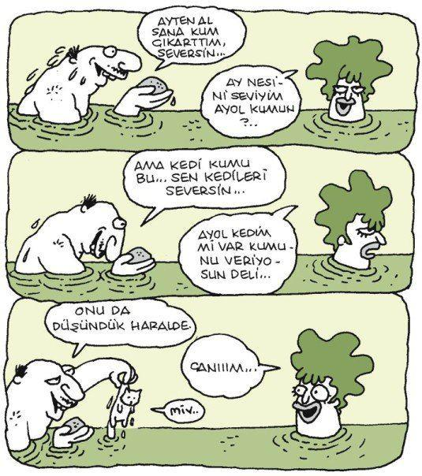
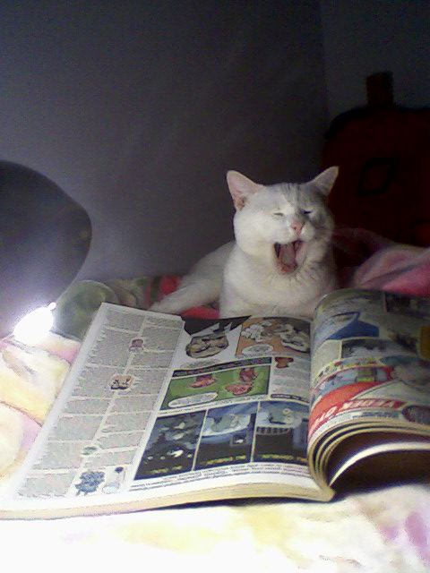
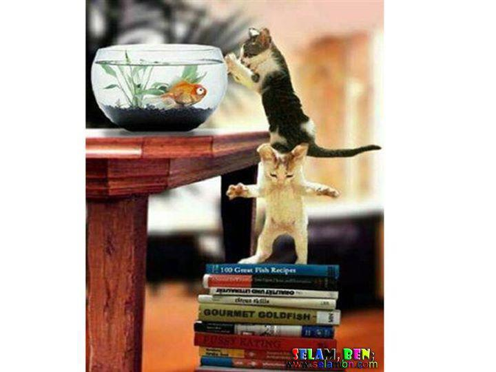

MİVV!!

* pisisisipisipisi
* pisisisipisipisi
Daha fazlası
için Uykusuzz.com
~$ >>CAT
Nankör ama onu severken
bunların hiç bir anlamı kalmıyor
Bir Miv, demesi senin stresini alır.

Bilgiye de açımmm imagination
Haylazlıklarını da unutmamak lazım
Bi tanecim pisicimm

have you noticed it's in 3D*?
* beat that, prezi ;)